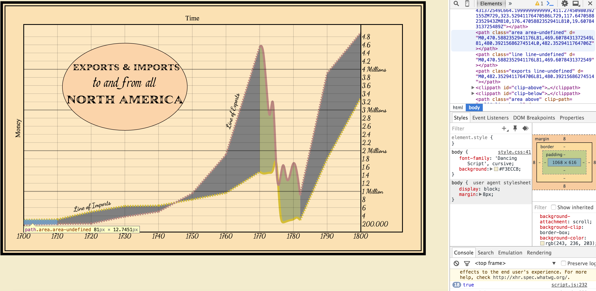

Summary
As a Graduate Research Assistant, I am working with Professor Lauren Klein and a Digital Media student to explore historical visualizations with modern technologies. One of our projects, about four months in duration, focused on William Playfair’s difference charts. We recreated this using d3.js to understand both the past and the present, how data is interpreted, and the idea of repair in digital media. This process resulted in two visualizations, one interactive and one static, and a paper which we submitted to Digital Humanities, a European-based conference. In particular, I worked on the static map and while we all worked on the paper.
The full paper can be read here.
Playfair
The biggest challenge I encountered while creating the static map was differentiating between existing data from William Playfair and data that I had to interpret. Ultimately I ended up using a technique described by Kevin Schaul.
Upcoming Work
Upcoming projects include digitizing and making interactive Elizabeth Peabody’s historical event chart, as well as other projects with d3.